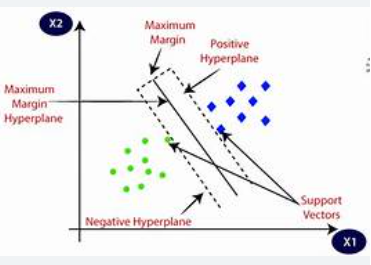

üí° What is a Support Vector Machine (SVM)?
Support Vector Machine (SVM) is a supervised machine learning algorithm used for both classification and regression tasks, though it is mostly used for classification. It finds the optimal hyperplane that best separates data points of different classes.
ü߆ How Does It Work?
SVM tries to find a decision boundary (called a hyperplane) that separates classes with the largest possible margin. The data points that are closest to the hyperplane and influence its position are called support vectors.
The objective of SVM is to maximize the margin between the classes.
üìè Key Concepts:
- Hyperplane: A line (in 2D), plane (in 3D), or n-dimensional separator between classes.
- Margin: Distance between the hyperplane and the closest data points from each class.
- Support Vectors: Critical data points lying closest to the hyperplane.
üî¢ SVM Equation
For a binary classification:
f(x) = w · x + b
Where:
w is the weight vectorx is the input vectorb is the bias
The classifier predicts class based on the sign of
f(x).
⚙️ Kernel Trick
SVM can efficiently handle non-linearly separable data using kernel functions, which transform data into higher-dimensional space.
- Linear Kernel: For linearly separable data
- Polynomial Kernel: For curved boundaries
- Radial Basis Function (RBF): Popular for non-linear problems
- Sigmoid Kernel: Behaves like a neural network
üñºÔ∏è SVM Visualization

Visualization of SVM margin, support vectors, and hyperplane
üìç Real-World Applications
- Face detection
- Spam email classification
- Gene classification (bioinformatics)
- Handwriting recognition (OCR)
- Intrusion detection systems
✅ Advantages
- Effective in high-dimensional spaces
- Works well with clear margin of separation
- Memory efficient (uses only support vectors)
⚠️ Limitations
- Not suitable for large datasets (training is slow)
- Less effective on noisy data
- Choosing the right kernel can be tricky